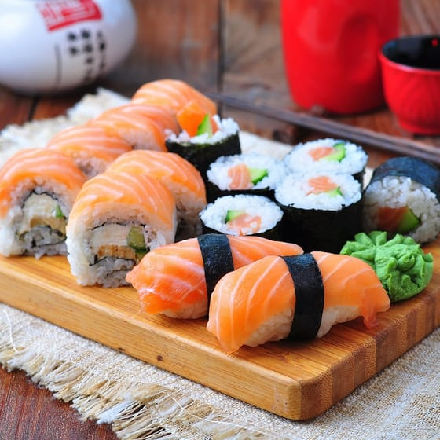

Sushi

Descriptions
Ingredients
For the Rice:
- 2 cups sushi rice
- 2 ½ cups water
- ¼ cup rice vinegar
- 2 tbsp sugar
- 1 tsp salt
For the Rolls:
- 5 sheets of nori (seaweed)
- 1 cucumber, julienned
- 1 crab stick (or imitation crab), shredded (optional)
- 1 small carrot, julienned
- Sesame seeds (optional)
- Soy sauce, pickled ginger, and wasabi for serving
Instructions
- Rinse the sushi rice in cold water until the water runs clear.
Combine rice and water in a pot, then bring to a boil. Reduce heat, cover, and simmer for 18–20 minutes. Let it rest, covered, for 10 minutes off the heat.
In a small bowl, mix rice vinegar, sugar, and salt until dissolved. Gently fold this mixture into the cooked rice while it’s still warm. Let the rice cool to room temperature.
- Slice your vegetables and any additional fillings into thin, long strips.
- Place a bamboo sushi mat (wrapped in plastic wrap for easy cleanup) on a flat surface.
Place a sheet of nori, shiny side down, on the mat.
- Wet your hands with a mix of water and rice vinegar to prevent sticking.
Spread a thin layer of rice over the nori, leaving about 1 inch at the top edge free of rice.
Arrange your fillings horizontally in the center of the rice.
Roll the sushi tightly using the bamboo mat, starting at the edge closest to you. Press gently but firmly as you roll to ensure a tight seal.
- Use a sharp knife dipped in water to cut the roll into 6–8 pieces.
Sprinkle sesame seeds on top if desired.
- Arrange your sushi rolls on a plate and serve with soy sauce, pickled ginger, and wasabi.